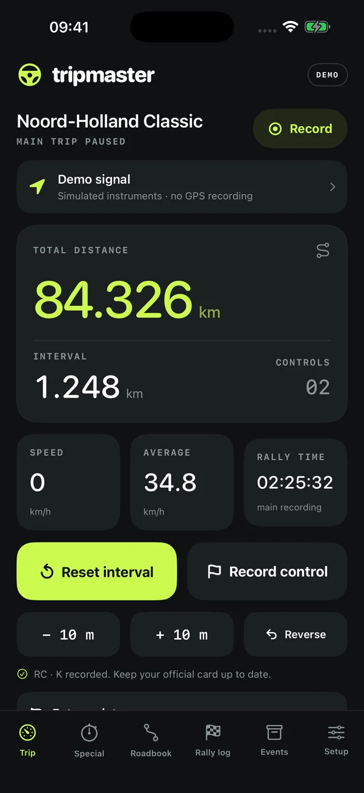

Keep your place.
Total and interval tripmeters, GPS status, calibration, reverse counting and quick corrections.
The co-driver’s cockpit
A clear set of instruments for puzzle rallies and regularities. Built around the person in the navigator’s seat.
Get support ↗Explore the instruments
Total and interval tripmeters, GPS status, calibration, reverse counting and quick corrections.
Independent regularities, target-speed tables, scheduled starts and early or late timing.
Control notes, GPX exports and finished event archives, with optional private iCloud Drive storage.
Find help with recording, specials, GPS and your event archive. Contact us in English or Dutch.